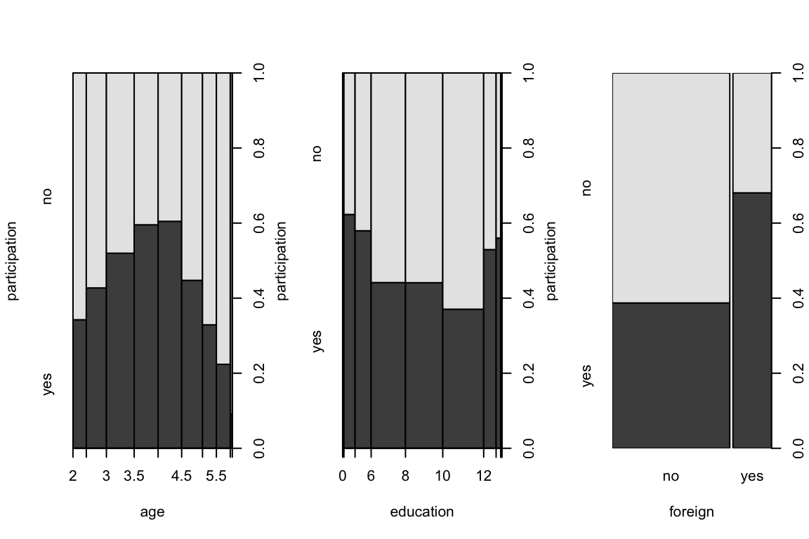
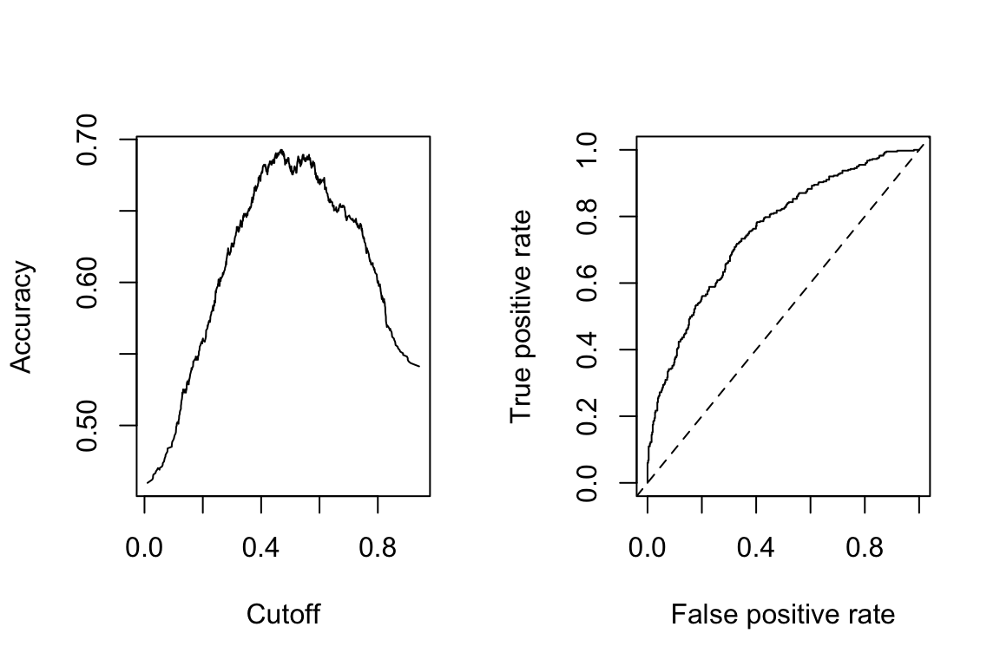
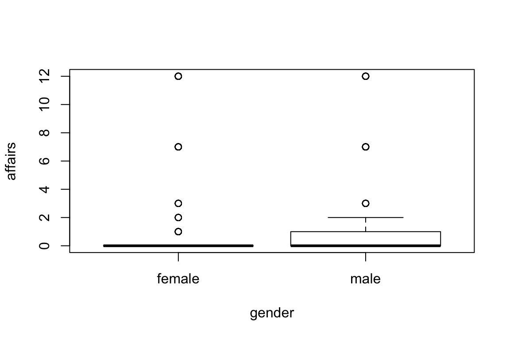

Exploring the examples in Kleiber and Zeileis’ Applied Economics in R
I just wanted to explore a little more some of the topics covered in the fantastic Applied Econometrics with R. All of these examples come from their text in Chapter 3.
participation income age education youngkids oldkids foreign
1 no 10.78750 3.0 8 1 1 no
2 yes 10.52425 4.5 8 0 1 no
3 no 10.96858 4.6 9 0 0 no
4 no 11.10500 3.1 11 2 0 no
5 no 11.10847 4.4 12 0 2 no
6 yes 11.02825 4.2 12 0 1 no
Call:
glm(formula = participation ~ . + I(age^2), family = binomial(link = "probit"),
data = SwissLabor)
Deviance Residuals:
Min 1Q Median 3Q Max
-1.9191 -0.9695 -0.4792 1.0209 2.4803
Coefficients:
Estimate Std. Error z value Pr(>|z|)
(Intercept) 3.74909 1.40695 2.665 0.00771 **
income -0.66694 0.13196 -5.054 4.33e-07 ***
age 2.07530 0.40544 5.119 3.08e-07 ***
education 0.01920 0.01793 1.071 0.28428
youngkids -0.71449 0.10039 -7.117 1.10e-12 ***
oldkids -0.14698 0.05089 -2.888 0.00387 **
foreignyes 0.71437 0.12133 5.888 3.92e-09 ***
I(age^2) -0.29434 0.04995 -5.893 3.79e-09 ***
---
Signif. codes: 0 '***' 0.001 '**' 0.01 '*' 0.05 '.' 0.1 ' ' 1
(Dispersion parameter for binomial family taken to be 1)
Null deviance: 1203.2 on 871 degrees of freedom
Residual deviance: 1017.2 on 864 degrees of freedom
AIC: 1033.2
Number of Fisher Scoring iterations: 4
Average of the sample marginal effects is determined by the following:
(Intercept) income age education youngkids
1.241929965 -0.220931858 0.687466185 0.006358743 -0.236682273
oldkids foreignyes I(age^2)
-0.048690170 0.236644422 -0.097504844 This can be evauluated with a pseudo R^2 called _McFadden’s pseudo-R^2.
\[R^2 = 1- \frac{l(\hat\beta)}{l(\bar y)}\]
[1] 0.1546416
pred
true 0 1
no 337 134
yes 146 255
z test of coefficients:
Estimate Std. Error z value Pr(>|z|)
(Intercept) 3.749091 1.327072 2.8251 0.004727 **
income -0.666941 0.127292 -5.2395 1.611e-07 ***
age 2.075297 0.398580 5.2067 1.922e-07 ***
education 0.019196 0.017935 1.0703 0.284479
youngkids -0.714487 0.106095 -6.7344 1.646e-11 ***
oldkids -0.146984 0.051609 -2.8480 0.004399 **
foreignyes 0.714373 0.122437 5.8346 5.391e-09 ***
I(age^2) -0.294344 0.049527 -5.9430 2.798e-09 ***
---
Signif. codes: 0 '***' 0.001 '**' 0.01 '*' 0.05 '.' 0.1 ' ' 1
trips quality ski income userfee costC costS costH
1 0 0 yes 4 no 67.59 68.620 76.800
2 0 0 no 9 no 68.86 70.936 84.780
3 0 0 yes 5 no 58.12 59.465 72.110
4 0 0 no 2 no 15.79 13.750 23.680
5 0 0 yes 3 no 24.02 34.033 34.547
6 0 0 yes 5 no 129.46 137.377 137.850
z test of coefficients:
Estimate Std. Error z value Pr(>|z|)
(Intercept) 0.2649934 0.0937222 2.8274 0.004692 **
quality 0.4717259 0.0170905 27.6016 < 2.2e-16 ***
skiyes 0.4182137 0.0571902 7.3127 2.619e-13 ***
income -0.1113232 0.0195884 -5.6831 1.323e-08 ***
userfeeyes 0.8981653 0.0789851 11.3713 < 2.2e-16 ***
costC -0.0034297 0.0031178 -1.1001 0.271309
costS -0.0425364 0.0016703 -25.4667 < 2.2e-16 ***
costH 0.0361336 0.0027096 13.3353 < 2.2e-16 ***
---
Signif. codes: 0 '***' 0.001 '**' 0.01 '*' 0.05 '.' 0.1 ' ' 1Overdispersion??
Overdispersion test
data: rd_poisson
z = 2.4116, p-value = 0.007941
alternative hypothesis: true dispersion is greater than 1
sample estimates:
dispersion
6.5658 Yup
Overdispersion test
data: rd_poisson
z = 2.9381, p-value = 0.001651
alternative hypothesis: true alpha is greater than 0
sample estimates:
alpha
1.316051
z test of coefficients:
Estimate Std. Error z value Pr(>|z|)
(Intercept) -1.1219363 0.2143029 -5.2353 1.647e-07 ***
quality 0.7219990 0.0401165 17.9976 < 2.2e-16 ***
skiyes 0.6121388 0.1503029 4.0727 4.647e-05 ***
income -0.0260588 0.0424527 -0.6138 0.53933
userfeeyes 0.6691676 0.3530211 1.8955 0.05802 .
costC 0.0480087 0.0091848 5.2270 1.723e-07 ***
costS -0.0926910 0.0066534 -13.9314 < 2.2e-16 ***
costH 0.0388357 0.0077505 5.0107 5.423e-07 ***
---
Signif. codes: 0 '***' 0.001 '**' 0.01 '*' 0.05 '.' 0.1 ' ' 1
[,1]
poisson -1529.4313
negative_binomial -825.5576Improvement!
0 1 2 3 4 5 6 7 8 9
obs 417 68 38 34 17 13 11 2 8 1
exp 277 146 68 41 30 23 17 13 10 7This model is under-predicting the zero number of trips. Perhaps it is time to use a zero-inflated model that will help to correct this undercounting.
\[f_{zeroinfl}(y) = p_i * I_{0}(y)+(1-p_i)*f_{count}(y;\mu_i)\]
Thus the linear predictor portion uses all of the independent variables and the inflation component to be a function of quality and income.
Call:
zeroinfl(formula = trips ~ . | quality + income, data = RecreationDemand,
dist = "negbin")
Pearson residuals:
Min 1Q Median 3Q Max
-1.08885 -0.20037 -0.05696 -0.04509 40.01393
Count model coefficients (negbin with log link):
Estimate Std. Error z value Pr(>|z|)
(Intercept) 1.096634 0.256679 4.272 1.93e-05 ***
quality 0.168911 0.053032 3.185 0.001447 **
skiyes 0.500694 0.134488 3.723 0.000197 ***
income -0.069268 0.043800 -1.581 0.113775
userfeeyes 0.542786 0.282801 1.919 0.054944 .
costC 0.040445 0.014520 2.785 0.005345 **
costS -0.066206 0.007745 -8.548 < 2e-16 ***
costH 0.020596 0.010233 2.013 0.044146 *
Log(theta) 0.190175 0.112989 1.683 0.092352 .
Zero-inflation model coefficients (binomial with logit link):
Estimate Std. Error z value Pr(>|z|)
(Intercept) 5.7427 1.5561 3.691 0.000224 ***
quality -8.3074 3.6816 -2.256 0.024041 *
income -0.2585 0.2821 -0.916 0.359504
---
Signif. codes: 0 '***' 0.001 '**' 0.01 '*' 0.05 '.' 0.1 ' ' 1
Theta = 1.2095
Number of iterations in BFGS optimization: 26
Log-likelihood: -722 on 12 DfLet’s check the fit!
0 1 2 3 4 5 6 7 8 9
obs 417 68 38 34 17 13 11 2 8 1
exp 433 47 35 27 20 16 12 10 8 7Looks a great deal better!
Useful for an excessive number of zeros (or a small number of zeros). This is more widely used in economics according to the text. The hurdle consists of two parts
0 1 2 3 4 5 6 7 8 9
obs 417 68 38 34 17 13 11 2 8 1
exp 417 74 42 27 19 14 10 8 6 5A Tobit model posits that Gaussian linear predictor exists for a latent variable, \(y_0\) exists. IT is reported only if the latent variable is positive.
Thus:
\[y_i^0= x_i^T\beta+\epsilon_i\] \[y_i = \begin{cases} y_i, y_i^0 >0\\ 0, y_i^0 \le 0 \end{cases},\]
affairs gender age yearsmarried children religiousness education
4 0 male 37 10.00 no 3 18
5 0 female 27 4.00 no 4 14
11 0 female 32 15.00 yes 1 12
16 0 male 57 15.00 yes 5 18
23 0 male 22 0.75 no 2 17
29 0 female 32 1.50 no 2 17
occupation rating
4 7 4
5 6 4
11 1 4
16 6 5
23 6 3
29 5 5
Call:
tobit(formula = affairs ~ age + yearsmarried + religiousness +
occupation + rating, data = Affairs)
Observations:
Total Left-censored Uncensored Right-censored
601 451 150 0
Coefficients:
Estimate Std. Error z value Pr(>|z|)
(Intercept) 8.17420 2.74145 2.982 0.00287 **
age -0.17933 0.07909 -2.267 0.02337 *
yearsmarried 0.55414 0.13452 4.119 3.80e-05 ***
religiousness -1.68622 0.40375 -4.176 2.96e-05 ***
occupation 0.32605 0.25442 1.282 0.20001
rating -2.28497 0.40783 -5.603 2.11e-08 ***
Log(scale) 2.10986 0.06710 31.444 < 2e-16 ***
---
Signif. codes: 0 '***' 0.001 '**' 0.01 '*' 0.05 '.' 0.1 ' ' 1
Scale: 8.247
Gaussian distribution
Number of Newton-Raphson Iterations: 4
Log-likelihood: -705.6 on 7 Df
Wald-statistic: 67.71 on 5 Df, p-value: 3.0718e-13
Linear hypothesis test
Hypothesis:
age = 0
occupation = 0
Model 1: restricted model
Model 2: affairs ~ age + yearsmarried + religiousness + occupation + rating
Note: Coefficient covariance matrix supplied.
Res.Df Df Chisq Pr(>Chisq)
1 596
2 594 2 4.9078 0.08596 .
---
Signif. codes: 0 '***' 0.001 '**' 0.01 '*' 0.05 '.' 0.1 ' ' 1Age and occupation are joinly weakyl significant.
z test of coefficients:
Estimate Std. Error z value Pr(>|z|)
education 0.869998 0.093071 9.3476 < 2.2e-16 ***
minorityyes -1.056438 0.411994 -2.5642 0.01034 *
custodial|admin 7.951359 1.076932 7.3833 1.544e-13 ***
admin|manage 14.172125 1.474364 9.6124 < 2.2e-16 ***
---
Signif. codes: 0 '***' 0.001 '**' 0.01 '*' 0.05 '.' 0.1 ' ' 1Text and figures are licensed under Creative Commons Attribution CC BY 4.0. The figures that have been reused from other sources don't fall under this license and can be recognized by a note in their caption: "Figure from ...".